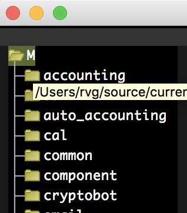

[rvg@ip-192-168-1-105 expend-http-security-acl-layer (add-docker-pull-commands)]$ cat start-workspace.sh
#!/bin/sh
export WORKROOT=$PWD
open -n -a /Applications/Emacs.app --args $WORKROOT/rebar.config -l $WORKROOT/workspace/init.el --debug-init
# Jy sal hier ^^^^^ jou null.erl opmaak, en alles wat met rebar te doen het uithaal
[rvg@ip-192-168-1-105 expend-http-security-acl-layer (add-docker-pull-commands)]$ cat workspace/init.el
; Call default emacs init
(setq-default default-directory (getenv "WORKROOT"))
(setq ecb-source-path
(list
(list (concat (getenv "WORKROOT") "/apps") "A")
(list (concat (getenv "WORKROOT") "/deps") "D")
(list (concat (getenv "WORKROOT") "/stests") "S")
(list (concat (getenv "WORKROOT") "") ".")
)
)
; ^^^^ configures this:

(setq ecb-compilation-buffer-names (quote (
("*Calculator*") ("*vc*") ("*vc-diff*") ("\\*Apropos.*\\*" . t) ("*Occur*") ("*shell*") ("\\*[cC]ompilation.*\\*" . t)
("\\*i?grep.*\\*" . t) ("\\*Help.*\\*" . t) ("*Completions*") ("*Backtrace*") ("*Compile-log*") ("*bsh*") (" *Message-Log*")
; Erlang Buffers
("*erlang*") ("*edts*")
; Workspace Buffers
("*muddle_be*") )))
(setenv "ERL_LIBS" (concat (getenv "WORKROOT") "/apps/" ":" (getenv "WORKROOT") "/deps/“))
; ^^^ configures the path in Erlang
- erlang-support.el
(defun configure-erlang-machine ()
(interactive)
(if (getenv "USE_REBAR_FOR_SHELL")
(progn
(message (format "USE_REBAR_FOR_SHELL specified, using rebar to start interactive shell" ))
(setq inferior-erlang-machine "rebar3")
(setq inferior-erlang-machine-options '("as" "interactive" "shell"))
(setq inferior-erlang-shell-type nil))
(progn
(message "USE_REBAR_FOR_SHELL not specified, using built-in inferior-erlang")
(setq inferior-erlang-machine-options '("-sname" "emacs"))
(set-nodename-from-env)
)
)
)